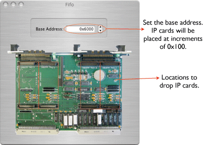
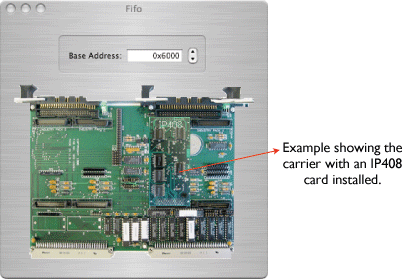

This card is a carrier for up to four standard industryPack modules. The IP Carrier object can only be placed into a VME crate object. Double-clicking it brings up a dialog onto which you can drap one of the IP modules, i.e. the IP408. The configuration icon for the IP Carrier looks like this: 

Here's an example of a carrier that is holding one IP module, the IP408. IP modules can be dragged to different positions on the card. When an IP module is inserted into the carrier, a connection point will appear on the IP carrier card in the VME crate view.
